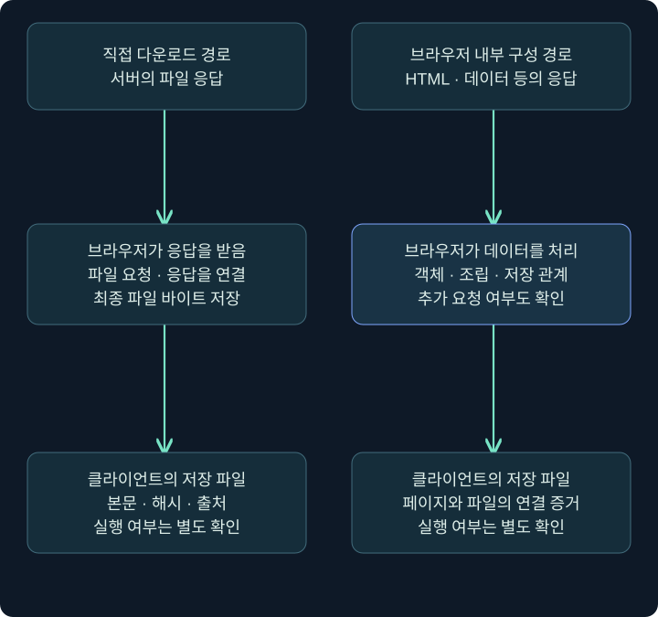
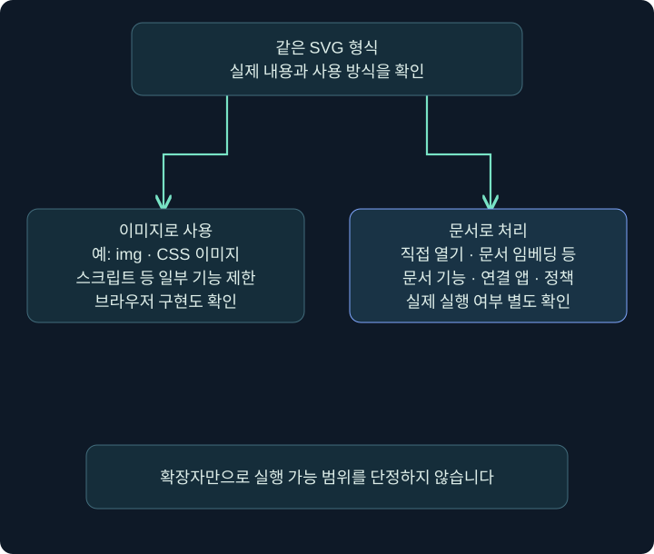
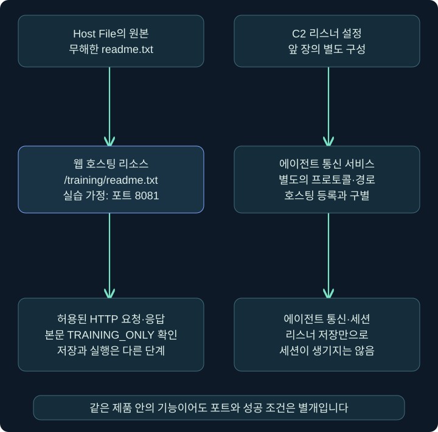

Cobalt Strike 화면 실습: Host File·사이트 관리·Clone Site·Web Log
실제 Cobalt Strike 창에서 파일 선택·URL·포트·MIME·사이트 관리·복제 옵션·접속 기록을 차례로 읽고 격리 실습 예시와 확인 지점을 연결합니다.
1. 다운로드 파일은 어디에서 만들어졌을까요?
웹 페이지를 본 뒤 다운로드 폴더에 파일이 생겼습니다. 네트워크에서 그 파일을 직접 내려받았을 수도 있고, 브라우저가 이미 받은 데이터를 조합해 파일을 만들었을 수도 있습니다. 두 경우의 최종 파일이 같아 보여도 네트워크와 단말에서 연결해야 할 증거는 다릅니다.
이번 강의는 Cobalt Strike 접속 → Host File → Sites → Web Log → Clone Site의 실제 설정 위치를 먼저 찾고, HTML·SVG 전달 원리와 관측을 연결합니다. 설정 예시는 격리 실습망의 단순한 안내문 readme.txt를 가정합니다. 실행 파일·매크로·자동 다운로드 페이지·입력 수집 페이지를 만들거나 전송하지 않습니다. 실제 웹 서버나 제품 기능을 실행한 결과도 아닙니다.
앞의 장에서 배운 구분을 한 번 더 적용해 보세요. 호스팅 설정, URL 접근, 브라우저의 파일 저장, 파일 실행, C2 세션 생성은 각각 다른 사건입니다. 마지막 사건을 보았다는 이유로 앞의 모든 전달 단계를 추측으로 채우지도 않습니다.
2. 직접 다운로드와 브라우저 내부 조립을 비교합니다
전통적인 직접 다운로드에서는 브라우저가 파일 URL을 요청하고 서버 응답의 바이트를 저장합니다. 반면 HTML smuggling이라고 부르는 전달 방식에서는 HTML·스크립트 등으로 받은 데이터를 브라우저 안에서 다시 구성해 저장 경로와 연결할 수 있습니다. 브라우저의 정상 기능이 악용될 수 있다는 원리입니다.

그림 오른쪽에서도 처음의 HTML·스크립트·포함 데이터를 전달하는 네트워크 활동은 있습니다. ‘최종 파일 이름의 HTTP 요청이 없다’와 ‘네트워크로 아무것도 받지 않았다’는 같은 결론이 아닙니다. 뒤에서 추가 리소스를 요청하는 구현도 있어 모든 사례가 네트워크 한 건으로 끝나는 것도 아닙니다.
Microsoft는 이러한 원리를 이용한 실제 캠페인을 연구했습니다. 그러나 브라우저의 데이터 처리·파일 저장 API 자체는 정상 웹 앱에서도 사용합니다. 특정 API 이름이나 인코딩 문자열만으로 악성 판정을 하지 않고, 전달 문맥·생성 파일·이후 실행까지 연결합니다.
3. Base64·Blob·blob URL을 서로 다른 개념으로 읽습니다
Base64는 바이트를 텍스트로 표현하는 인코딩입니다. 암호화와 다르므로 비밀 키가 있어야 읽을 수 있는 보호라고 설명하지 않습니다. Blob은 브라우저에서 데이터 덩어리를 표현하는 객체이고, blob URL은 그 객체를 참조하기 위한 브라우저 내부의 URL 형태입니다.
| 항목 | 분석에서 읽을 의미 | 단정하면 안 되는 것 |
|---|---|---|
| Base64 데이터 | 표현을 바꾼 바이트일 가능성 | 곧바로 악성·암호화·탐지 불가 |
| Blob 객체 | 브라우저가 메모리 등에서 다루는 데이터 | 반드시 인터넷 서버에 있는 파일 |
| blob URL | 브라우저가 연결한 객체 참조 | 그대로 외부 DNS에 조회할 도메인 |
| 다운로드 파일 | 실제 저장된 바이트 | 저장 즉시 실행·침해 완료 |
관측 자료에 blob URL만 있다면 이를 외부 서버 URL처럼 조회해 원본을 찾으려 하지 않습니다. 대신 관련 페이지·스크립트·다운로드 메타데이터·저장된 파일을 연결합니다. 저장된 파일이 있다면 본문 해시·실제 형식·출처 정보도 별도로 기록합니다.
이 강의는 실행용 전달 스크립트 대신 구조를 읽는 원리를 설명합니다. 인코딩을 한 번 해석했다고 여러 단계의 최종 동작까지 검증한 것이 아니며, 내용을 해석한 범위와 아직 남은 층을 함께 적어야 합니다.
4. SVG는 어떻게 사용되는지에 따라 동작이 다릅니다
SVG는 XML 기반 벡터 그래픽 형식입니다. 확대해도 선명한 도형과 텍스트를 표현할 수 있어 이 과정의 개념도에도 사용합니다. 하지만 같은 .svg라도 단순 이미지로 삽입되는 경우와 문서로 열리는 경우를 구별해야 합니다.

MDN은 SVG를 이미지로 사용할 때 스크립트 등 일부 기능이 제한된다고 설명합니다. 따라서 ‘SVG에는 스크립트를 넣을 수 있으니 모든 미리보기와 이미지 표시가 코드를 실행한다’는 결론은 틀립니다. 반대로 모든 SVG 처리 경로가 무조건 같은 제한을 적용한다고 봐서도 안 됩니다. 임베딩 방식·기본 연결 프로그램·브라우저 정책과 실제 내용을 확인합니다.
분석 메모에는 ‘메일의 이미지 미리보기’, ‘브라우저에서 문서로 열림’, ‘다른 앱에서 처리됨’ 중 어떤 문맥이 관측됐는지 적습니다. 이 사이트의 독립 개념도는 정적 SVG이며 스크립트·외부 리소스·다운로드 동작을 포함하지 않습니다.
5. 네트워크와 단말에서 무엇을 연결할까요?
승인된 정상 실습 페이지의 관측을 연습한다면 브라우저의 개발자 도구 → Network에서 요청 URL·Status·Type·Initiator·응답 헤더를 볼 수 있습니다. 페이지 이동 전 로그를 유지하려면 Preserve log의 현재 상태를 확인합니다. 개발자 도구 UI·제품 버전에 따라 명칭은 달라질 수 있습니다. 실제 의심 페이지를 이 강의 과정에서 열지는 않았습니다.
| 관측 위치 | 확인할 것 | 한계 |
|---|---|---|
| 메일·웹 게이트웨이 | 전달 링크·응답·검사·차단 결과 | 단말 내부의 모든 저장·실행을 보여 주지 않음 |
| 브라우저 요청 기록 | URL·응답·호출 주체·시간 | 암호화·캐시·기록 범위와 수집 시점을 고려 |
| 다운로드 기록·파일 | 원천 참조·본문·해시·MotW | 기록이나 메타데이터가 없을 수도 있음 |
| 프로세스·EDR | 저장 이후의 실제 실행·연관 행위 | 제품 구성과 관측 범위에 영향을 받음 |
TLS로 암호화된 통신의 내용 가시성과 엔드포인트 관측도 구별해야 합니다. MIME이 text/html이라는 사실만으로 내부 데이터가 안전하거나 보안 제품이 볼 수 없다고 말하지 않습니다. 저장 전·후 관측을 함께 확인해야 합니다.
6. 화면 실습 1: Host File에서 무엇을 입력할까요?
이제 실제 Cobalt Strike 창을 기준으로 따라 읽겠습니다. 준비물은 자신이 관리하는 격리 실습망의 Team Server와 Client, 그리고 TRAINING_ONLY 한 줄이 든 readme.txt입니다. 아래 값은 설명을 위해 정한 가정이며 실제 제품에서 실행·접속한 결과가 아닙니다. 이미 Client에 접속돼 있다면 바로 Host File 단계부터 읽습니다.
설정 전 확인: Client 접속 창의 Host와 Port
출처는 Fortra Client 시작 안내입니다. 앞 장에서 사용한 공개 공식 화면을 설정 준비용으로 다시 배치했습니다. 공식 삽화의 값은 이 강의의 실습 값과 다릅니다.
| 접속 창에서 볼 칸 | 이 실습의 가정 | 확인할 이유 |
|---|---|---|
| Host | 192.168.56.10 | Client가 접속할 자신의 Team Server |
| Port | 50050 | Team Server 관리 접속 포트이며 아래 웹 포트 8081과 다름 |
| User | 자신에게 발급된 운영자 이름 | 다른 운영자의 이름을 임의로 사용하지 않음 |
| Password | 해당 Team Server의 발급된 값 | 강의에서 비밀번호를 정하거나 공개하지 않음 |
| Connect | 입력 후 접속 | 접속 성공 뒤 주 메뉴가 표시되는지 확인 |
새 연결이면 서버 지문을 검증하는 단계도 해당 환경의 기준과 대조합니다. 접속 오류가 나면 웹 호스팅 포트부터 바꾸지 말고 이 창의 Host·관리 Port·계정과 서버 상태를 확인합니다.
실제 화면 20: Site Management → Host File
출처는 Fortra Hosting Files입니다. 원본의 simple.html, 1.1.1.1, 포트 80, MIME automatic은 공식 예시입니다. 이 그림은 입력 위치를 찾는 데 사용하고, 실제 연습 값은 바로 아래 표를 봅니다. 작은 창은 확대해 표시했으며 누르면 원본을 볼 수 있습니다.
클릭 1: 상단 메뉴에서 Site Management → Host File을 엽니다. Client 접속 창과 다른 별도 대화상자입니다. 여기서는 웹으로 제공할 파일과 주소를 정합니다.
클릭 2: 맨 위 File 줄 오른쪽의 파일 선택 버튼을 누릅니다. 자신의 로컬 readme.txt를 선택하고 File 칸에 선택한 경로가 들어왔는지 확인합니다. Local URI에 로컬 경로를 넣지 않습니다.
입력 3~6: 그 아래 Local URI → Local Host → Local Port → Mime Type 순서로 다음 값을 대조합니다. 칸마다 기준이 달라 같은 경로나 포트 하나를 반복 입력하는 작업이 아닙니다.
| 화면의 위치 | 칸 이름 | 설명용 입력값 | 이 칸의 뜻 |
|---|---|---|---|
| 첫 줄 | File | 자신이 선택한 readme.txt의 로컬 전체 경로 | 호스팅할 원본 파일 |
| 둘째 줄 | Local URI | /training/readme.txt | 웹 요청에 쓰일 경로, /로 시작 |
| 셋째 줄 | Local Host | 192.168.56.10 | 이 격리망에서 사용할 서버 주소 |
| 넷째 줄 | Local Port | 8081 | 텍스트 파일을 제공할 웹 서비스 포트 |
| 다섯째 줄 | Mime Type | text/plain | 브라우저에 알릴 콘텐츠 형식 |
| 입력란 아래 | Enable SSL | 이 가정에서는 선택하지 않음 | HTTP 예시이며 HTTPS로 안내하지 않음 |
| 창 하단 | Launch | 위 값을 모두 대조한 뒤 누르는 버튼 | 파일 호스팅을 시작하는 별도 동작 |
확인 7: Enable SSL 선택 상태와 포트가 맞는지 다시 확인합니다. TLS를 쓰는 별도 환경에서는 인증서·제품 프로필·주소 일치 등의 준비가 필요합니다. 체크 하나로 올바른 HTTPS가 완성되지는 않습니다.
클릭 8: 표의 가정에 맞춘 환경에서 Launch를 누른 뒤 다음 절의 Sites 목록으로 갑니다. 호스팅 시작은 파일을 실행하는 동작이 아닙니다. 이 강의에서는 버튼을 실제 누르거나 리소스를 등록하지 않았습니다.
로컬 파일의 위치, 웹의 URI, Team Server 관리 포트, 호스팅 포트를 구별해 보세요. 이 실습의 웹 주소는 문자열로 조합하면 http://192.168.56.10:8081/training/readme.txt입니다. 접속을 확인한 링크가 아니라 입력값의 관계를 보여 주는 예시입니다.
7. 화면 실습 2: Sites와 Web Log에서 결과를 확인합니다
Sites 목록: 어떤 행과 버튼을 볼까요?
Site Management → Manage에서 Sites 관리 목록을 확인합니다. 오래된 공식 웹 서비스 문서에는 View → Web Drive-by → Manage 경로도 남아 있습니다. 자신의 설치 버전에서 웹 리소스 관리 창을 열어 확인하며, 구형 메뉴를 현재 화면의 새 캡처라고 가정하지 않습니다.
현재 확인한 공개 공식 자료에는 Sites 목록의 적합한 실제 사진이 없어, 아래는 화면에서 읽을 항목을 정리한 표입니다. 실제 화면처럼 꾸민 그림은 사용하지 않습니다.
| Sites에서 읽을 항목 | 이 연습에서 대조할 내용 | 다음 동작 |
|---|---|---|
| URI | /training/readme.txt | 다른 리소스 행과 혼동하지 않기 |
| Host | 192.168.56.10 | 호스팅 창에 입력한 주소와 비교 |
| Port | 8081 | Client의 관리 포트 50050과 구별 |
| Type·Description | 선택한 파일을 제공하는 리소스인지 | 파일·웹 리소스와 다른 종류의 행을 구별 |
| Copy URL | 선택한 행의 URL 복사 | 붙여 넣은 문자열의 주소·포트·경로를 다시 확인 |
| Kill | 선택한 웹 리소스 중지 | Client 종료나 Beacon 종료와 다른 동작 |
클릭 순서: 먼저 URI가 정확히 일치하는 행을 선택합니다. 다음으로 Copy URL을 누르고, 자신이 허용한 격리망의 브라우저 주소창에 붙여 넣어 문자열을 확인합니다. 주소가 맞는 환경에서 요청했을 때 TRAINING_ONLY 내용이 표시되는지를 확인하는 흐름입니다. 이 조회는 웹 페이지의 입력 폼이나 계정을 사용하지 않습니다.
등록 행이 없으면 먼저 Host File의 선택 파일과 Launch 결과를 확인합니다. 행은 있지만 브라우저 접근이 안 되면 Host·Port·URI·라우팅·방화벽·서비스 충돌을 나누어 봅니다. 제품의 웹 요청 처리 정책 때문에 클라이언트 종류에 따라 응답이 달라질 수도 있어, 명령줄 도구의 404 하나만으로 리소스 등록 실패라고 확정하지 않습니다.
실제 화면 21: View → Web Log의 메뉴 위치
출처는 Cobalt Strike 공식 기능 안내입니다. 이 사진은 과거 버전의 실제 메뉴이며 색상 화살표도 공식 원본에 포함돼 있습니다. 현재 4.13을 새로 실행한 사진이 아니고, Web Log 탭 안의 실제 접속 결과를 보여 주는 사진도 아닙니다. 여기서는 ‘어느 메뉴를 여는가’를 확인합니다.
클릭 순서: 상단 View를 연 뒤 Web Log를 선택합니다. 열린 로그에서 방금 요청한 시각과 /training/readme.txt 경로를 찾고, 요청 주체·메서드·응답 정보를 함께 읽습니다. 로그의 표현·추가 정보는 제품 버전과 설정에 따라 달라질 수 있습니다.
| 확인할 정보 | 묻는 질문 |
|---|---|
| 요청 시각 | 자신이 보낸 요청의 시각과 맞나요? |
| 요청 경로·메서드 | /training/readme.txt를 요청했나요? |
| 원격 주소·User-Agent 등 | 어떤 클라이언트의 요청인가요? 프록시가 있나요? |
| 응답·처리 정보 | 원하는 리소스가 처리됐나요? 오류와 구별했나요? |
| 브라우저 본문 | TRAINING_ONLY 내용까지 확인했나요? |
다음은 화면 필드를 이해하기 위한 가상 요약입니다. 실제 Web Log에서 복사한 결과나 현재 제품의 정확한 출력 서식이 아닙니다.
요청 시각: 사용자가 직접 기록한 확인 시각
요청 경로: /training/readme.txt
요청 주체: 자신의 격리 실습 클라이언트
브라우저 내용: TRAINING_ONLY
판단: 텍스트 제공 확인. 파일 실행·Beacon 세션 생성은 이 결과와 별도.
정리할 때: Sites로 돌아가 실습 URI의 행을 다시 확인한 뒤 해당 리소스의 Kill을 사용합니다. 이후 새 요청에서 그 리소스가 더 이상 제공되지 않는지 확인합니다. 원래 파일 자체를 지우거나 Team Server 프로세스를 종료하는 것과는 다릅니다. 같은 서버의 다른 리소스 상태도 개별적으로 확인합니다. 이 정리 절차 역시 실제 수행한 결과가 아닙니다.
8. 화면 실습 3: Clone Site의 칸을 구별합니다
실제 화면 22: Site Management → Clone Site
아래 공식 삽화는 과거 외부 사이트 예시와 입력 기록이 선택된 상태를 담고 있습니다. 그대로 따라 넣는 권장값이 아닙니다. 이 강의의 예시는 자신이 소유한 정적 안내 페이지, 빈 Attack/Embed, 입력 기록 미선택 상태입니다.
출처는 Fortra Clone a Site입니다. 현재 안내서에 남은 구형 삽화에는 Attack으로 표시되지만 본문은 Embed라는 용어도 사용합니다. 안내서가 설명하는 SSL 항목은 이 삽화에는 보이지 않으므로 없는 체크박스 위치를 만들어 설명하지 않습니다.
먼저 구별할 것: Host File의 File은 로컬 파일이고, Clone Site의 Clone URL은 복제할 원본 페이지 주소입니다. 원본 페이지와 새로 제공할 주소도 다른 칸입니다. 자신이 운영하는 안내 페이지를 이미 격리망에 준비한 경우를 가정하겠습니다.
| 화면의 위치 | 항목 | 자체 정적 안내 페이지 예시 | 설정의 목적 |
|---|---|---|---|
| 첫 입력란 | Clone URL | http://192.168.56.20:8000/training/index.html | 자신이 운영하는 원본 안내 페이지 |
| 둘째 입력란 | Local URI | /training/page/ | 새로 제공할 페이지 경로 |
| 셋째 입력란 | Local Host | 192.168.56.10 | 복제 페이지를 제공할 실습 서버 주소 |
| 넷째 입력란 | Local Port | 8081 | 웹 제공 포트이며 리소스 경로를 구별 |
| 다섯째 입력란 | Attack 또는 Embed | 비워 둠 | 안내 페이지 표시만 확인 |
| 그 오른쪽 | ... | 이 안내문 실습에서는 선택하지 않음 | 다른 리소스를 연결하는 선택 버튼 |
| 입력란 아래 | Log keystrokes on cloned site | 선택하지 않음 | 입력 수집 없이 페이지 표시만 확인 |
| 창 하단 | Clone | 위 값을 대조한 뒤 사용 | 원본 페이지와 새 호스팅 주소를 연결 |
클릭·확인 순서: Site Management → Clone Site를 열고 원본 Clone URL과 새 Local URI·Host·Port를 먼저 대조합니다. Attack/Embed가 비어 있고 입력 기록이 선택되지 않았는지 확인한 뒤 Clone을 사용하는 흐름입니다. 같은 포트의 기존 /training/readme.txt와 /training/page/는 서로 다른 웹 리소스입니다. 원본 페이지를 준비하거나 복제 동작을 실제 수행하지 않았습니다.
설정 후에는 Sites → 해당 페이지 URI 선택 → URL 확인 → 자신의 브라우저에서 안내문 표시 확인 → Web Log에서 같은 요청 확인 순서로 이어집니다. 원본 페이지에 로그인·입력 폼·스크립트·자동 다운로드 동작이 없는 정적 안내문을 가정하며, 확인할 결과는 페이지 표시와 요청 관계입니다.
Site Clone은 페이지를 복제해 제공하는 기능이고 Host File은 지정한 파일 리소스를 제공하는 기능입니다. 페이지가 비슷하게 보인다는 사실, 파일이 전달됐다는 사실, 코드가 실행됐다는 사실은 별도로 검증합니다. 현대 브라우저의 다운로드·프레임·보안 정책 때문에 과거 설명의 자동 동작을 모든 환경에서 보장할 수도 없습니다.
9. 가상 사례를 최종 조사 메모로 바꿉니다
가상의 사건에서 ‘브라우저가 HTML을 받음’, ‘그 뒤 ZIP 파일이 생성됨’, ‘ZIP 안에 LNK가 있음’이라는 세 정보만 확보했다고 해 보겠습니다. 이 정보는 전달 방식을 조사할 이유가 됩니다. 하지만 HTML 내부 조립, LNK 실행, 후속 프로그램 실행을 모두 입증하지는 않습니다.
더 정확한 메모는 “HTML 응답과 ZIP 생성 사이의 연관성을 확인 중이며 브라우저 기록·저장 파일 해시·페이지 처리 내용을 추가 확인한다. 내부 LNK는 정적으로 확보했고 실행 여부는 미확인이다”입니다. 네트워크·브라우저·파일·실행을 차례로 연결하면 없는 증거를 한 번에 건너뛰지 않게 됩니다.
조건을 바꾸어 실제 실행 기록이 추가됐다면 그 프로세스의 명령줄·부모·파일 해시와 저장된 항목을 연결할 수 있습니다. 그래도 외부 통신이나 자료 유출까지 자동으로 확인되는 것은 아닙니다. 처음 배운 분류가 마지막 사고 판단에서도 그대로 도움이 됩니다.
10. 복습과 바로 읽는 해설
복습 1. 최종 파일 이름의 HTTP 요청이 없으면 아무것도 받지 않았나요?
해설: 아닙니다. 앞의 HTML·스크립트·포함 데이터 전달과 브라우저 처리 경로를 확인해야 합니다. 캐시와 기록 범위도 고려합니다.
복습 2. Base64는 암호화인가요?
해설: 바이트를 텍스트로 표현하는 인코딩입니다. 비밀 키 기반 보호와 다르며 그 존재만으로 악성이나 탐지 불가를 뜻하지 않습니다.
복습 3. blob URL을 외부 서버 주소처럼 조회하면 되나요?
해설: 브라우저 객체 참조 문맥을 먼저 확인합니다. 관련 페이지·처리 코드·다운로드·저장 파일을 연결해야 합니다.
복습 4. 모든 SVG 표시에서 스크립트가 실행되나요?
해설: 아닙니다. 이미지로 사용될 때와 문서로 처리될 때의 기능 제한이 다를 수 있습니다. 임베딩·브라우저·정책을 확인합니다.
복습 5. Host File의 File과 Local URI는 같은 경로인가요?
해설: File은 원본 파일 선택, Local URI는 웹에서 제공하는 경로입니다. 로컬 파일 시스템과 URL의 기준이 다릅니다.
복습 6. 호스팅 목록에 있으면 클라이언트 다운로드도 성공했나요?
해설: 등록만 확인한 것입니다. 실제 요청·응답·내용·저장을 각각 확인해야 합니다. 네트워크 도달성도 별도입니다.
복습 7. 페이지가 복제되면 파일 실행까지 보장되나요?
해설: 아닙니다. 페이지 표시·리소스 전달·브라우저 정책·저장·실행은 다른 단계입니다. 각 단계의 근거가 필요합니다.
복습 8. 이번 장의 실제 실행 검증은 무엇이었나요?
해설: 5강의 합성 자료 Python 해석입니다. Windows·Office·제품 호스팅·메일 전송·실행 패키지를 실제 수행한 결과는 아닙니다. 공식 화면과 가정 예시를 구별합니다.
11. 공식 근거와 장 마무리
공식 자료 확인일은 2026년 11월 3일입니다. 공개 Fortra 4.13 문서와 Microsoft·MDN 설명을 대조했습니다. 제품 원본 화면은 실제 새 실습 결과와 구별합니다.
- Microsoft HTML smuggling 원 연구: 브라우저 내부 조립 전달의 역사적 관측.
- MDN Blob, blob URL, SVG as an image: 데이터 표현과 처리 문맥.
- Microsoft Edge Network 도구: 요청·응답·호출 주체 확인.
- Fortra 웹 서비스 관리, 공식 View 메뉴 안내: 리소스 관리·Web Log 경로와 구버전 메뉴 주의.
- Fortra Hosting Files, Website Cloning: 메뉴와 기능의 구별. 화면·실제 버전에 따른 차이는 확인해야 합니다.
5장에서는 전달·포장·트리거·실행 내용·표시 자료를 나누고, 로딩·설치·출처·브라우저·단말의 증거를 연결했습니다. 실제 사건을 읽을 때도 ‘어디까지 직접 확인했는가’를 질문하면서 같은 방법을 적용해 보세요.